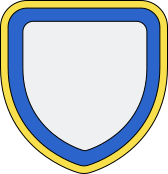
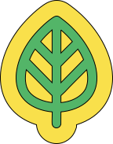

Haga clic en un candidato para ver sus propuestas
Analice y compare sus programas en cinco temas clave comentados por expertos. Le mostramos las propuestas que amenazan el Estado de Derecho y la democracia liberal.
Haga clic en un candidato para ver sus propuestas
Señales de alerta democrática detectadas en este candidato
Esta plataforma reúne información sobre las propuestas de los cinco candidatos punteros en cinco sectores clave para el siguiente gobierno. El objetivo es sistematizar y centralizar las propuestas para que sean más fáciles de leer y analizar. Además, hacemos una calificación de nivel de riesgo institucional y para el Estado de Derecho fundamentado en los criterios y principios de la Fundación, disponibles aquí. La Fundación es una organización no gubernamental, sin ánimo de lucro y sin filiación política. Con esta herramienta buscamos aportar al debate público para que la ciudadanía cuente con información verificada y comentada por expertos para tomar decisiones informadas.
La fuente principal de información son los programas oficiales de gobierno publicados por las campañas de los candidatos. En el caso de Abelardo de la Espriella se revisaron también entrevistas y publicaciones en redes sociales, pues el candidato no había publicado su programa al momento de iniciar esta revisión. En el caso de Sergio Fajardo también consultamos los programas detallados publicados en su página para los diferentes sectores. Puede consultar los programas de gobierno que usamos aquí.
Las propuestas son reproducidas con ediciones mínimas en algunos casos para mayor claridad o para sintetizar. Cuando las propuestas no provienen de los programas, las redactamos reproduciendo las palabras de los candidatos en sus entrevistas o publicaciones de redes sociales.
Los sectores priorizados para el análisis (seguridad, institucional, tierras y agro, energía y salud) se basan en las líneas de litigio estratégico que prioriza la Fundación. Más que hacer un barrido por todas las propuestas de los candidatos en todos los temas, buscamos dar información detallada y de alta calidad sobre las áreas de experticia de la Fundación.
Varias propuestas fueron comentadas por expertos en cada uno de los temas. Estas fueron reproducidas con ediciones mínimas para claridad y síntesis.
El panel de expertos se compone de:

Seguridad
Tierras y agroAlgunas propuestas están marcadas con "Alerta" o "Amenaza" para la institucionalidad y el Estado de Derecho. Esta marcación se basa en la metodología del semáforo del Estado de Derecho desarrollado por la Fundación.
Una propuesta está marcada con Alerta cuando implica una posible inconveniencia, inconstitucionalidad o ilegalidad. Consideramos inconvenientes las propuestas que, aunque válidas en el marco institucional vigente, son perjudiciales por sus consecuencias económicas, sociales o culturales.
Una propuesta está marcada como Amenaza cuando implica una amenaza real o altamente probable para el Estado de Derecho, como sustitución de la Constitución o propuestas contrarias a los principios del Estado de Derecho.
Los resúmenes por sector se basan en el contenido de los programas de gobierno de los candidatos y en los comentarios de los expertos al respecto.
Cada resumen viene acompañado de una clasificación cualitativa en términos de precisión, que denota qué tan específica y detallada es la propuesta, viabilidad, que considera qué tan realizable es dada la situación fiscal, política e institucional del país, y coherencia, que califica si la propuesta es coherente en relación con el resto del programa del candidato.
La lista de propuestas fue extraída manualmente de los programas de los candidatos. Usamos una herramienta de inteligencia artificial para verificar que las propuestas extraídas manualmente correspondieran con lo que se encuentra en los programas. También usamos inteligencia artificial para hacer un resumen conciso de las propuestas por sector y los comentarios de los expertos.
Si tiene alguna pregunta o si encuentra información incorrecta o desactualizada, puede reportarla a ideas@fedecolombia.org.